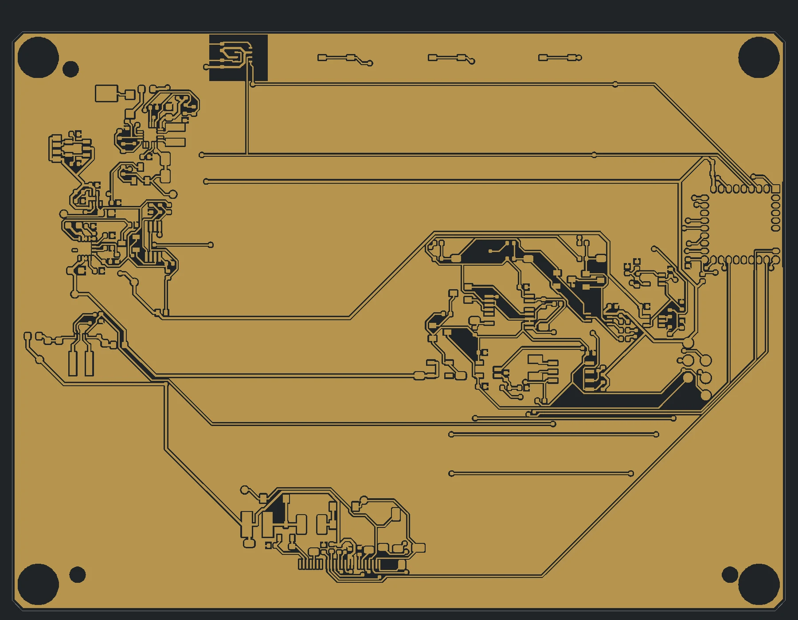

Cum am pornit
Voiam să văd cât de departe pot ajunge cu o listă de componente și aproape nicio experiență în proiectarea plăcilor. I-am explicat lui ChatGPT, în cuvintele mele, ce voiam să fac și i-am cerut să-mi scrie un prompt pentru Codex. Am rulat acel prompt ca obiectiv în Codex, cu GPT-6 Astra pe Max, acces la calculator, internet și Autodesk Fusion prin MCP. Agentul putea să caute o piesă, să o deseneze, să deschidă desenul și să-l corecteze.
Am cerut o placă de 1 mm cu două straturi, cu toate componentele sus și cel mult 4,1 mm deasupra plăcii. Pe listă erau un senzor meteo, radio, încărcare solară, USB-C și un ecran e-paper de 4,2 inchi. Am lăsat dimensiunile și alegerea codurilor exacte de comandă la latitudinea agentului. Opt subagenți au ajutat la placă, inclusiv la rutare, firmware și verificări.
Alimentarea, radioul și placa
Panoul solar este specificat la 5 V și 230 mA în punctul de putere maximă. El alimentează un SPV1050. Un TPS2116 alege între energia solară și USB, cu prioritate pentru USB. Ambele surse ajung la același încărcător BQ24074 și apoi la un acumulator LiPo protejat de 250 mAh. Circuitul de temperatură poate opri încărcarea. USB-C servește la alimentare. Pentru programare și depanare sunt șapte contacte pogo.
Pe schemă, trecerea de la o sursă la alta părea simplă. În simularea cu modelul TI pentru TPS2116, intrarea solară era alimentată, iar tensiunea USB a scăzut de la 5,25 V la 3,55 V în 200 µs. În toate cele trei rulări, ieșirea comutatorului a coborât la aproximativ 3,88 V, sub pragul de reglare al intrării încărcătorului. Simularea a acoperit doar comutatorul. Pe prototip trebuie urmărite și tensiunile încărcătorului și bateriei în timpul comutării. Pornirea numai din solar rămâne și ea de încercat.
În proiect, placa măsoară 112 × 84 mm. Cipul nRF54L15-QFAA se află într-un modul radio Ebyte E73-2G4M08S1F cu cristale și antenă proprii. După verificarea desenului modulului, agentul a mutat patru paduri de masă cu 0,30 mm în amprenta de pe placă. În circuitul afișajului, deschiderea din șablonul de pastă pentru bobina L301 era la doar 0,025 mm de conturul nominal al tranzistorului Q301. După mutarea bobinei cu 0,35 mm, între padul ei 2 și corpul tranzistorului rămân 0,375 mm la dimensiunile nominale și 0,305 mm la dimensiunea maximă a tranzistorului.


Cum trezești un ecran care își uită imaginea
Imaginea rămâne pe ecran după ce tai alimentarea, dar controlerul SSD1683 își pierde memoria de lucru. O actualizare parțială are nevoie atât de imaginea veche, cât și de cea nouă. Firmware-ul salvează ultima scenă confirmată în memoria nevolatilă RRAM a microcontrolerului. Când poate face o actualizare parțială după trezire, firmware-ul reconstruiește cadrul vechi și pe cel nou. Fiecare imagine monocromă de 400 × 300 ocupă 15.000 de octeți, iar firmware-ul le transmite pe amândouă. Dacă alimentarea a căzut în timpul actualizării, cere o redesenare completă.
Ceasul PCF85063A rămâne alimentat și poate ține ora când alimentarea principală de 3,3 V este oprită. În schema proiectată, alarma de la fiecare sfert de oră, TPL5111 și regulatorul RT6160 pornesc alimentarea de 3,3 V pentru o citire de la BME280. Primul ceas ales nu mai era în stoc. Varianta folosită este PCF85063AT/AY. Și conectorul de 24 de pini a trebuit verificat pentru panoul alb-negru V2. Pinii 1 și 4 rămân liberi, iar pinul 5 este VSH2.
Testele pe calculator au verificat ora următoarei alarme pornind din fiecare secundă posibilă a zilei (86.400 de cazuri). Au simulat și căderea alimentării în timp ce firmware-ul salva starea afișajului. Trei compilări de la zero au produs fișiere HEX identice octet cu octet. La temperatura camerei, modelul energetic dă 0,707 mAh pe zi, inclusiv autodescărcarea presupusă, pentru 16 actualizări complete și 80 parțiale. La +5 °C, cu bateria la 3,35 V, încărcarea oprită și toate cele 96 de actualizări complete, modelul dă 7,886 mAh pe zi, cu autodescărcarea inclusă. Consumul real, urmele imaginii precedente și lizibilitatea se măsoară pe prototip.

Carcasa pe care uitasem să o cer
Primul prompt se oprea la placă. În al doilea am cerut o carcasă imprimabilă și o verificare vizuală. Corpul carcasei măsoară 134 × 196 × 24 mm în CAD. Cu tastele din spate în repaus, grosimea ajunge la 25,10 mm. Suportul înclină carcasa cu 12° față de verticală. Ecranul și panoul solar împart fața. Cele trei taste se apasă din spate, iar aerul ajunge la senzor prin cinci deschideri. În model am văzut că se zărea placa pe lângă mufa USB-C, așa că am corectat decupajul.

Când deschizi capacul, se mișcă și cablul bateriei. La demontare, ghidul cere să ridici capacul paralel cu placa, cu cel mult 12 mm, apoi să deconectezi bateria. Placa și sticla afișajului se deplasează împreună pe o cursă de 20 mm, cu cablul flexibil încă prins în conector. Setul de imprimare are 11 piese STL. Pentru întregul set, slicerul a estimat 10 h 48 min 08 s și 239,17 g de PETG. Încă nu am imprimat sau montat carcasa.
Ce a trecut și ce rămâne de măsurat
Proiectul are 92 de rețele electrice, 210 via-uri și 214 găuri. Verificarea de fabricație a comparat găurile cu fișierele de găurire redeschise. Cuprul, masca, pasta, poziția pieselor, spațiul antenei și accesul la padurile de test au fost verificate separat. Proiectul final a trecut toate cele 36 de verificări automate de fabricație și toate cele 35 de verificări mecanice pe modelul CAD.
Fusion a raportat zero abateri la verificarea regulilor plăcii. În KiCad, placa importată a avut zero abateri și zero conexiuni lipsă. La verificarea schemei, Fusion a semnalat 35 de avertismente despre denumirile pinilor de alimentare (ERC 104). Pentru fiecare, raportul urmărește pinul din schemă până la padul de pe placă și la rețeaua lui. Șase variante stricate intenționat au pus la încercare verificatorul, între ele un modul oglindit, pinii bateriei inversați și un traseu pe un strat interior al plăcii cu două straturi. Toate șase au fost detectate.
Prototipul urmează să fie construit. Toate cele 15 teste din fișa de banc sunt marcate ca neexecutate. Prima alimentare, comutarea sub sarcină, încărcarea la temperaturi diferite, curentul în repaus, raza radio, imaginea după refresh parțial și potrivirea cablului USB rămân de testat. Planul de calificare descrie montajul și pragurile de acceptare. Dacă te uiți peste fișiere, m-ar interesa în special ce ai verifica întâi pe banc.
Durata și costul celor trei prompturi
Codex a înregistrat timpul de la pornirea fiecărui prompt până la răspunsul final. Totalul exclude pauzele dintre prompturi și numără o singură dată timpul în care subagenții au lucrat în paralel.
Am rulat proiectul pe abonamentul meu de 200 USD pe lună. După estimarea mea, cele trei prompturi au consumat cam jumătate din limita săptămânală. Pentru comparația cu API-ul am numărat fiecare răspuns înregistrat o singură dată, inclusiv la subagenți. La tarifele standard Astra consemnate la 15 noiembrie 2026, un milion de tokeni costa 10 USD pentru intrări noi, 1 USD pentru intrări citite din cache și 50 USD pentru ieșiri. Raționamentul este deja inclus în ieșire.
| Etapă | Durată | Apeluri | Intrări noi | Din cache | Ieșire | USD |
|---|---|---|---|---|---|---|
| Placă | 1 h 46 min 36 s | 2.452 | 3.873.137 | 370.936.448 | 994.702 | 459,40 |
| Carcasă | 1 h 06 min 50 s | 1.495 | 2.080.431 | 221.413.632 | 702.439 | 277,34 |
| Revizie carcasă | 2 h 00 min 37 s | 2.697 | 3.257.702 | 419.919.104 | 1.090.795 | 507,04 |
| Total | 4 h 54 min 03 s | 6.644 | 9.211.270 | 1.012.269.184 | 2.787.936 | 1.243,78 |
Cum s-a desfășurat proiectul
0 – 40 min0 – 200 USD
1. Placa electronică1 h 46 min 36 s · 459,40 USD
Componentele, memoria ecranului și radioul19 min 46 s106,18 USD
A verificat stocurile, a schimbat RTC-ul, a ales modulul radio și a corectat etichetele lipsă din primul export al schemei.
Prima rutare și compilarea firmware-ului16 min 59 s105,76 USD
Fusion a găsit trasee de numai 0,09 mm. În paralel, trei compilări de la zero au produs fișiere HEX identice octet cu octet.
Lățimi de traseu, pini și cuprul de masă20 min 12 s99,58 USD
A refăcut rutarea și a comparat pinii cu firmware-ul. La redeschiderea fișierelor Gerber au apărut zone de masă izolate.
Legăturile de masă și ansamblul 3D14 min 17 s63,05 USD
A refăcut legăturile de masă și a redeschis placa echipată în STEP. La dimensiunea maximă, corpul tranzistorului Q301 putea acoperi o parte din deschiderea șablonului de pastă pentru bobina L301.
Rutarea finală și verificările de fabricație15 min 37 s64,45 USD
A ajustat distanța dintre componente, a repetat DRC în Fusion și a reconstruit toate cele 92 de rețele din cuprul exportat.
Reimportul și pachetul final19 min 47 s20,38 USD
A reimportat arhiva F3Z în Fusion, a verificat legăturile dintre schemă, placă și modelul 3D, apoi fișierele de livrare.
2. Carcasa1 h 6 min 50 s · 277,34 USD
Dimensiunile afișajului și poziția panoului5 min 15 s21,43 USD
A verificat desenul producătorului, a rezervat cei 36,7 mm necesari cablului flexibil și a poziționat panoul solar sub ecran.
Modelarea și felierea carcasei13 min 40 s55,03 USD
A modelat primele 11 piese imprimabile, inclusiv suportul și tastele. Felierea a arătat zone fără sprijin, așa că ghidajele capacului au devenit rampe.
Jocul sticlei, suportul și ordinea de montaj19 min 25 s90,92 USD
A mutat un stâlp de șurub din dreptul sticlei, a lungit carcasa cu 2 mm și a verificat introducerea în suport și ordinea de conectare a cablului flexibil.
Toleranțele și cablajul solar14 min 24 s63,48 USD
A verificat sticla și cablul flexibil pe cursa de montaj de 20 mm, apoi poziția izolației firului solar față de lipitură.
Fișierele de imprimare și ghidul de montaj14 min 06 s46,48 USD
A verificat exporturile pentru imprimare și montaj și a pregătit modelele și ghidul ilustrat.
3. Ajustarea carcasei2 h 0 min 37 s · 507,04 USD
Reproducerea problemei și refacerea decupajului15 min 12 s72,19 USD
A găsit mufa la aproape 10 mm în spatele peretelui. Cu noul locaș, placa nu se mai vedea din unghiul capturii mele.
Spațiul pentru fișă și îmbinarea capacului30 min 56 s164,51 USD
A verificat în CAD inserția completă a unei fișe de 13 × 7 mm, a refeliat fața și a adăugat o nervură unde panoul solar se vedea prin îmbinare.
Unghiurile oblice și toleranțele plăcii37 min 04 s156,65 USD
A îngustat lateralele locașului și a testat placa la limitele de montaj. Noul perete a blocat toate cele 41 de linii de vedere identificate anterior.
Traseele de imprimare și centrarea măștii25 min 57 s89,38 USD
A verificat peretele în slicer, cursa fișei în modelul CAD cu suportul montat și deplasarea admisă a măștii. A adăugat un șablon de control și a feliat cele 11 piese.
Verificările finale și livrarea11 min 28 s24,30 USD
A reunit vederile din Fusion, verificările geometrice și kitul actualizat. Raportul final acoperă 277 de direcții de observare pe model.
Cronometrul pornește de la 0:00:00 pentru fiecare prompt. Am delimitat etapele după jurnalul de lucru. Numele etapei descrie activitatea principală din acel interval. Costul include toate răspunsurile înregistrate atunci, inclusiv ale subagenților care lucrau în paralel. Duratele și momentele de început și de sfârșit sunt rotunjite separat la secundă. Sumele sunt estimări la tarifele API, rotunjite la cent.
Prompturile
Ce i-am cerut lui ChatGPT
1. Răspunsul ChatGPT și primul meu prompt pentru Codex
2. Carcasa
3. Ultima ajustare a carcasei
Fișierele proiectului
Arhiva completă conține placa și schema editabile, biblioteca, ansamblurile STEP, sursa și binarul HEX pentru firmware, exporturile de fabricație, fișierele de atelier și rapoartele. Carcasa este disponibilă în STEP, alături de generatorul CAD. Documentația Markdown este disponibilă în română și engleză. Ghidul ilustrat de atelier este în română.
Documentația proiectului
- Prezentarea proiectului
- Jurnal de proiectare
- Alimentare și încărcare
- Verificări electrice (ERC)
- Fabricație și asamblare
- Radio și programare
- Trezire, timp și senzori
- Afișajul e-paper
- Plan de testare a prototipului
- Firmware de punere în funcțiune
- Probe de afișaj pe banc
- Jurnal firmware
- Fișă de banc
- Verificarea carcasei
- Masca pentru conector
- Verificarea măștii
- Ajustarea măștii
- Costurile proiectării plăcii